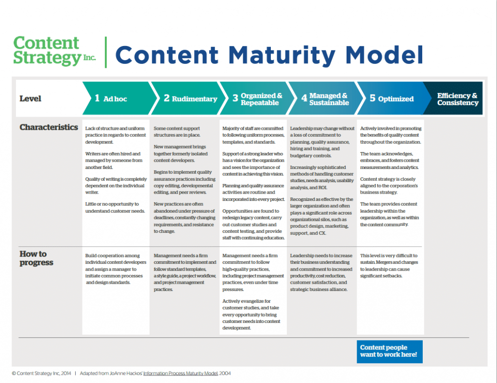
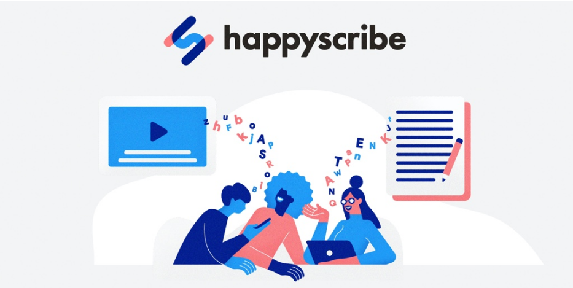
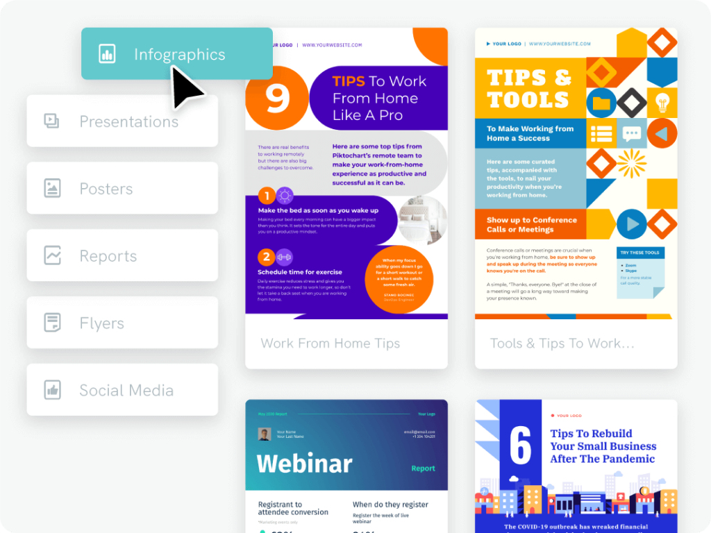
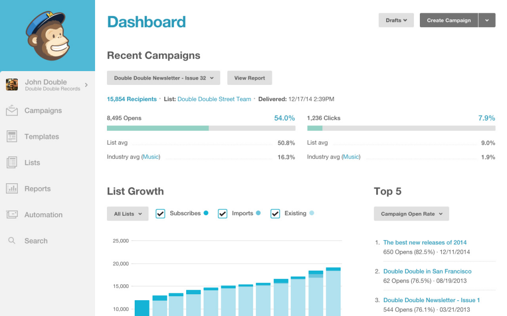
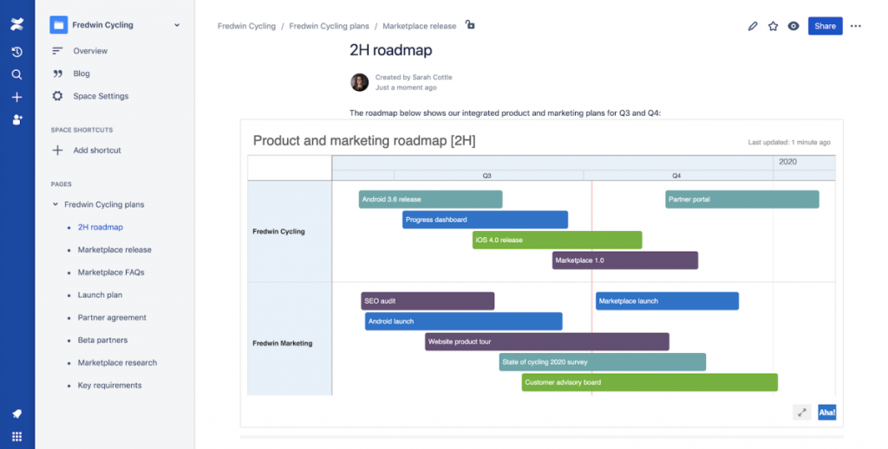
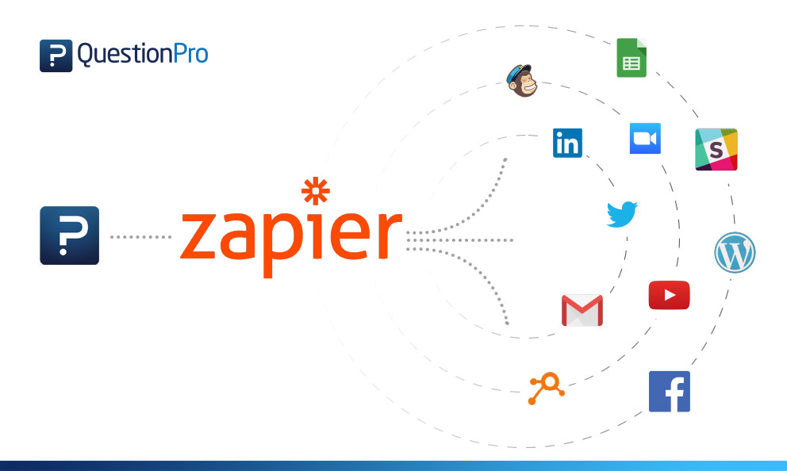
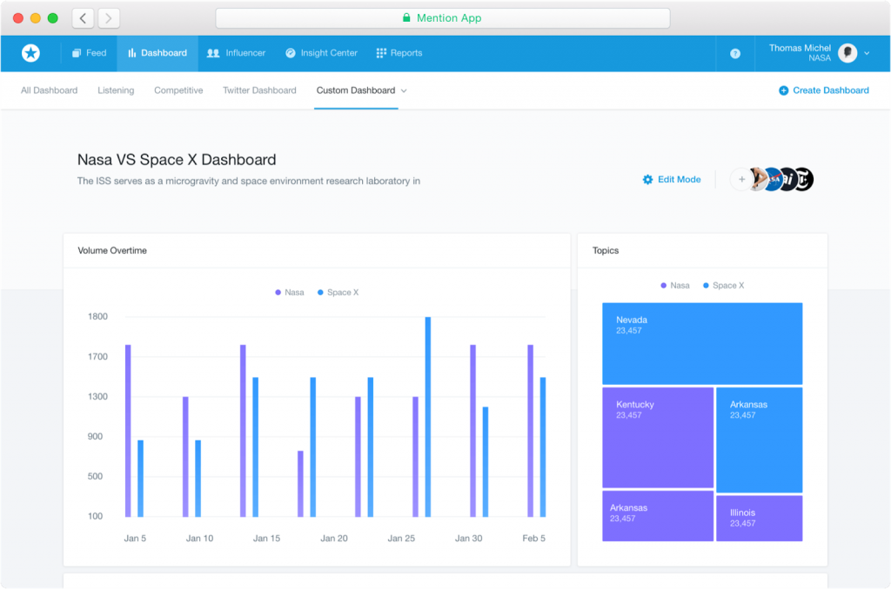

In a research made by DemandMetric, it is explained that the use of content marketing costs less than half of what traditional marketing could cost and generates about three times more leads.
No matter at what stage of the content maturity model you are in, scaling and diversifying your content operations is critical for the overall success of your content marketing strategy. If you are reading this post, chances are you already know how powerful content marketing is. But, developing a proven system that brings you 3X high-quality leads is tricky. Testing your content frameworks on your target audience is the only sustainable way to ensure you have a clear shot.
But, here’s the thing.
Even if your content is something that your audience loves, failing to deliver content at the right time and context will not produce results. You need a cohesive, systematic flow of content to keep your audience engaged throughout the sales funnel.
To ensure you can keep up with the pace of your content demands, we have collated a list of the top 7 tools that will provide you with more in less time.

Your content marketing strategy must always start with defining your core goals. Understanding what your targets and timelines are, lays a solid foundation for driving successful content marketing operations. You can then develop more than one effective strategy that can help you achieve your short-term, mid-term, and long-term goals.
As you lay the blueprint, you can ensure the most effective execution of the same with the following 7 categories of martech tools focused on diversifying your content while you scale your content marketing strategy.
#1 Content research and strategy tools

Understanding your audience’s content preferences is critical to developing viral content pieces. This often starts with researching the content frameworks and styles that your ideal audience persona is already interested in. You can dive deeper into understanding the core topics that your audience is hungry to know about. Following are the top tools that you can consider to do so.
If you had to choose one tool to map the content consumption pattern of your target audience, Buzzsumo must be your go-to tool. From trending content pieces to your competitor’s content topics and placement, you can get hold of a lot of hard data with this tool. But it doesn’t stop at that. It gives you detailed reports about the top content shares, brand mentions, and influencer tracking; all look easy. This tool is a must when you are planning your editorial calendar.
If you are using content as the core tool to create an experience for your target audience, Uberflip is your dream tool. It centralizes all your content assets starting from blog posts and e-books to lead magnets, creating content hubs to make your brand communications consistent with your audience.
If you need deep, high-precision insights about search marketing, look no further than SEMrush. This tool is a goldmine of actionable insights from assessing your competitor’s search marketing movements like keywords, paid ad campaigns, and backlinks.
If you’re into video content marketing, then you might want to add subtitles or transcripts for your videos. Writing pages of transcripts can be really time-consuming. With Happy Scribe’s mp3 to text converter, you can now easily add transcripts and subtitles in your videos.
#2 Visual graphics

In a time when you are competing for your audience’s attention, you cannot afford to lose it after you have earned their attention with dull, boring text. No matter how good your content is, if you do not complement it with contextual, engaging graphics, you miss stimulating emotions in your audience. Here are some top tools that can help you in this regard.
Publishing blog posts without any illustrative images will only result in an increased bounce rate. Sure, you can use Photoshop if you have the resources. Canva is your answer to Photoshop. It not only has custom templates for all your graphic needs but ensures minimalist graphics knowledge for faster implementation. This means you can save the resources of hiring a specialist graphic designer in your team.
Data is the oil for every modern business. But, no matter how important it is, looking at wry data on your screen is boring. Piktochart utilizes data visualization techniques to turn your dull data into engaging, insightful facts and numbers. You can create a wide array of data visuals, including infographics, reports, and presentations.
Pushing your user engagement by a notch comes with gifs. GIPHY Cam is the beast when it comes to creating attention-grabbing gifs in minutes. Whether you are planning to create gifs from scratch or are looking for a way to add added elements to your recorded videos, this tool supports all.
#3 Email marketing tools

There is a good reason why email is so popular amongst content marketers across the globe. Fostering the most intimate conversation between a brand and potential customer, email marketing can bring you a whopping 4400% ROI (Return on Investment).
But, the success of an email marketing campaign lies in two factors: the copy and the tool. Here is a list of tools that can help.
If you are looking for an email service provider that never goes wrong with deliverability, Mailchimp is your tool. But, it doesn’t stop there. Monitoring open rates, click rates, to unsubscribe rates, this tool lets you track subscribers who are truly engaged in one dashboard.
If you have automation goals in your content marketing targets, ActiveCampaign should be the first tool you consider. Simplifying customer interactions with your brand, this tool has numerous pre-built automation widgets that help you create a more personalized experience for your subscriber list. The best part? It doesn’t take away your valuable time.
If you are an e-commerce startup, Drip can be your sales automation tool. It’s sophisticated workflows are integrated with an advanced list segmentation that enables you to create authentic conversations triggered by their interaction and shopping behaviors.
#4 Social media
In a time when even your goldfish has a social media presence, if you are neglecting the power of authentic conversations here, you are losing a lot of money on the table. But, for your social media content to work, you need to test what works and what doesn’t. Following are a few advanced tools that will help you to spread your word on social media.
Growth hacking your business through content needs more than just creating content. You need to find influencers in your niche who can give your brand the required boost. Kred is the best solution when it comes to this. Analyzing your social media presence, this tool suggests influencers who can impact your brand in real-time.
Although creating share-worthy content lies at the heart of every successful content marketing strategy, ensuring that your audience can do so easily is an essential part of it. Mashshare is the perfect plugin to add engaging, interactive buttons for your audience to share your content.
#5 Project management

Every winning content marketing campaign out there involves a great team that works relentlessly to develop it. This makes project management a make-or-break task for any content marketing team. Using systematic, organized software can make this job a cakewalk. Following are the top tools to consider.
The world of content production is dynamic. This means your project management requirements too abide by the same. Boasting a dirt-simple UI (user interface) and agile methodology, Trello is the perfect kanban-style project management tool for your teams.
Working with teams successfully needs you to create robust collaboration systems. Google Workspace is a master when it comes to collaboration. Integrating cloud computing, this tool allows document iterations, suggestions, and editing access to team members, making remote work look easy.
Most of the companies utilizing content for marketing their products fail in creating a forecast of the ROI. The reason? No systematic documentation process for content marketing naturally leads to fuzzy ideas to assess your content’s strength. This makes the documentation process critical. Confluence is your content team’s internal wiki for documenting the process. You can utilize tags and pre-built templates to make your work faster.
#6 Automation tools

Developing high-quality, fresh content consistently is a lot of work to do. If you are like most companies, your per capita production versus content needs will be unbalanced massively. This makes automating repetitive tasks critical.
It can create room for what truly matters, creating high-quality content at scale. Here are the top tools that can help you grow and hack your content operations.
Making the best content for your audience needs support from multiple tools. This means integrating each one with the other is critical for hassle-free workflow. Zapier is the answer to all your integration requirements.
Content marketing at the core focuses on building relationships with your target audience to turn them into customers in the long term. This makes creating end-to-end content is critical for a modern audience. Hubspot CRM is the perfect tool that checks all your requirements.
#7 Analytics tools

They say, if you can’t measure it, you can’t improve it. In content marketing, the conviction is true. Executing audience-focused campaigns is a great start. But to know if you are running at optimum levels, you need to audit every campaign you do. Here are the top tools to map the efficiency of your campaigns.
If you are mapping the ROI (return on investment) of your paid and organic content, you can’t miss Google Analytics. From tracking your website traffic and reporting insights on the content that gets views and shares, you know exactly where you can improve.
Identifying how your traffic interacts with your online brand can open doors of sales and brand equity. Crazyegg exactly does this. Creating heatmaps on how your audience engages, the buttons they click, this tool helps to optimize your conversions on your website.
Creating a positive impact on your audience about your brand is one of the core goals of any content marketer. Mention helps to understand your brand presence in real-time. Tracking your social media and other web mentions of your brand, this tool creates opportunities for your brand to grow your brand equity.
Parting Advice
Content marketing is a long-term haul, not a short-term gig. This means consistency is key to achieving your goals. But that’s not all.
If you need to be successful at your content marketing operations, you need to base all your campaigns on hard data, not assumptions. Sure, you can always start from a hypothesis that is based on empathizing with your target audience. However, this hypothesis always needs to be validated through experimentation on real people.
Answering the one big question, why they do what they do will provide you opportunities to develop creative ways to serve your audience better. This means no matter what your content scaling goal is, while diversifying content, you must have a comprehensive understanding of your target audience’s pain points and motivations. You can hack this process with the above tools.
Author bio
Atreyee Chowdhury works full-time as a Learning Experience Designer and a part-time writer. She has helped many small and medium-scale businesses achieve their content marketing goals with her carefully crafted content that is both informative and engaging. She lives in Bangalore, India with her husband. In her free time, she loves to read, experiment with different cuisines, travel, and explore the latest content marketing and L&D trends. You can reach her on Linkedin or write to her at atreyee.c@gmail.com to discuss your content marketing plans and requirements.
Leave a Reply